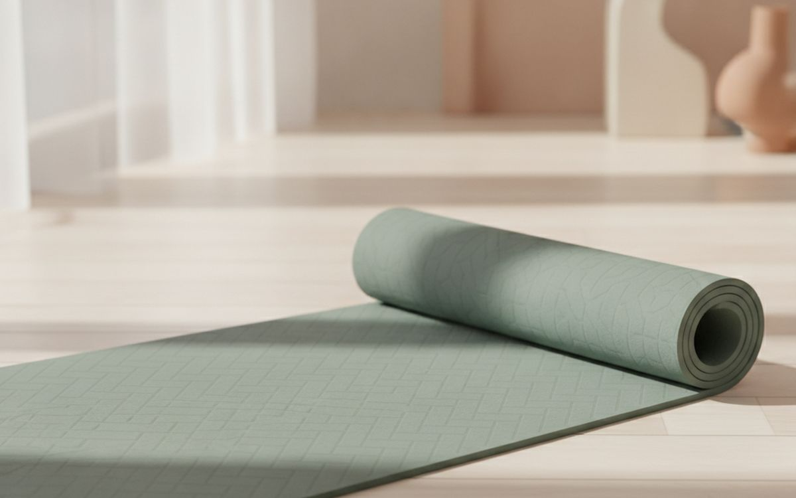
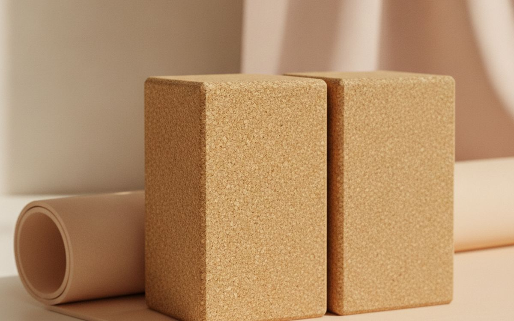
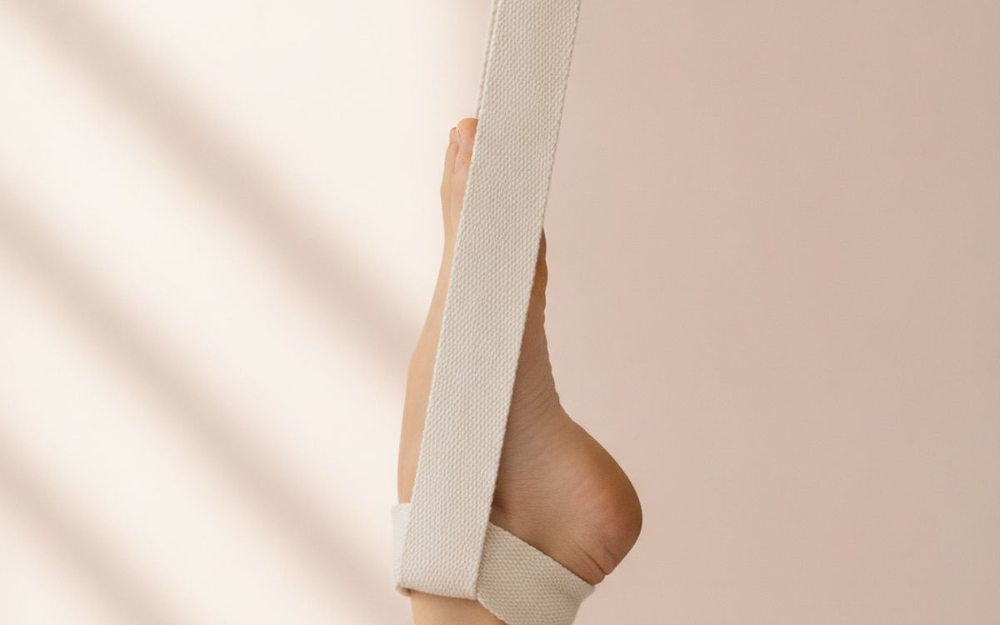
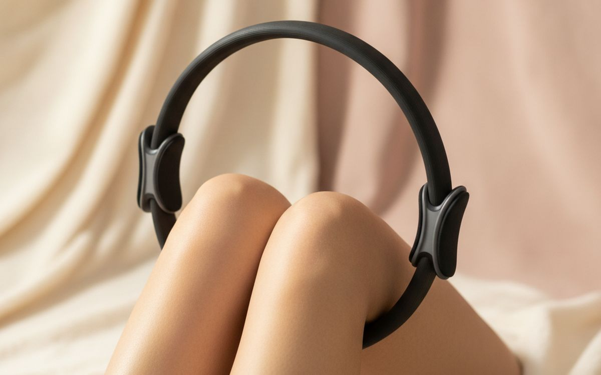
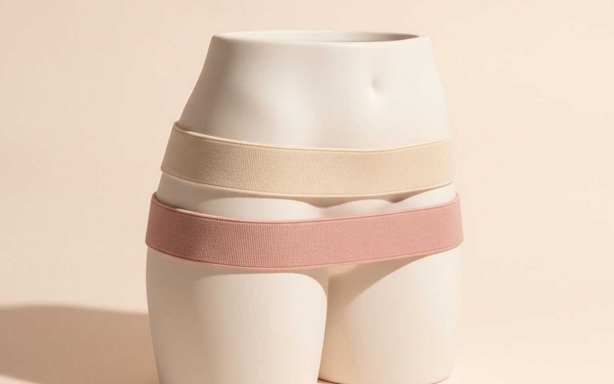
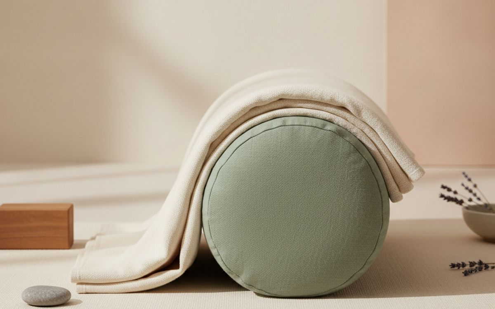
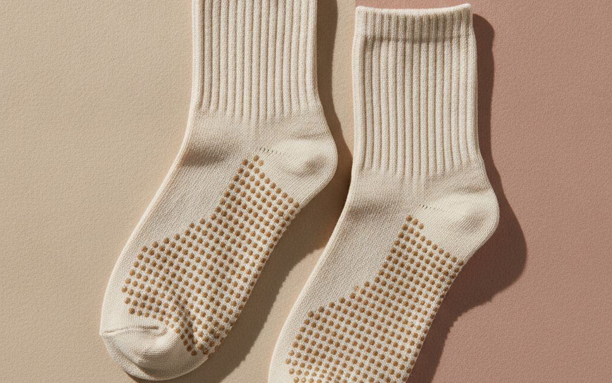
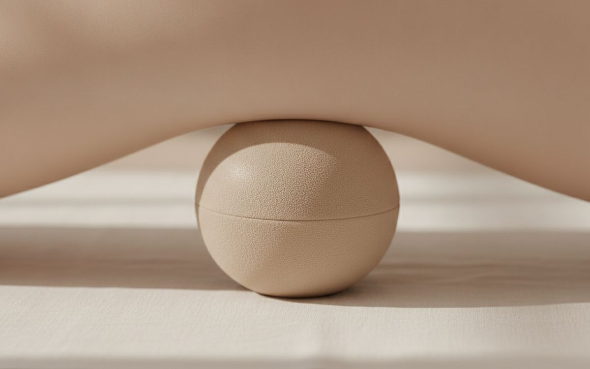
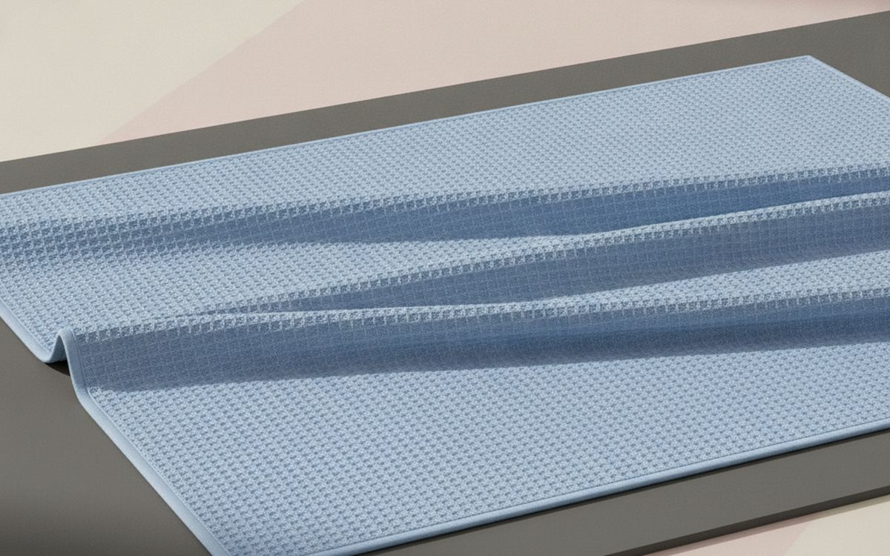
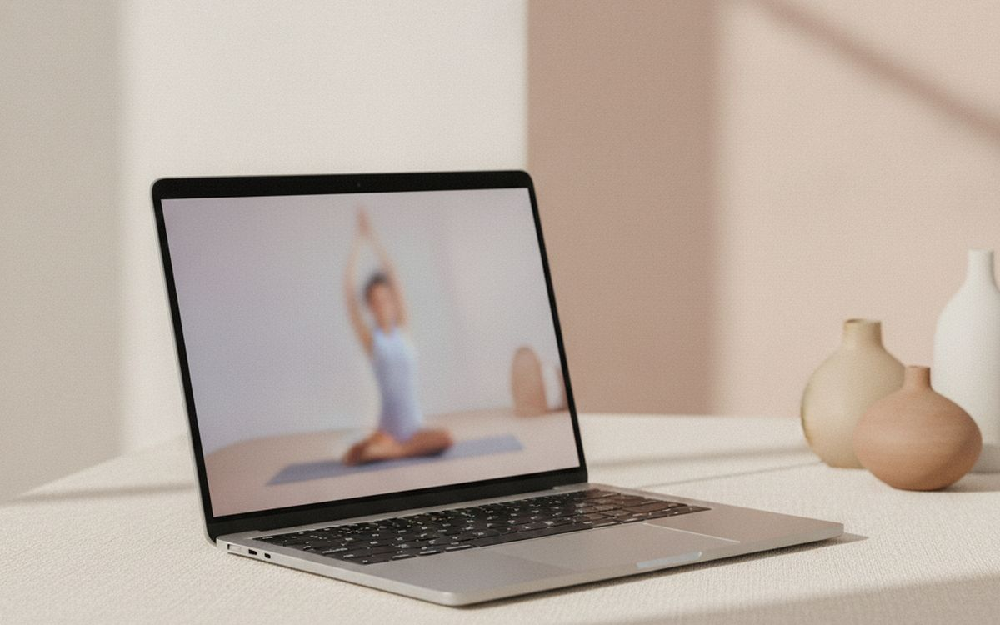

Home yoga and Pilates are among the cheapest ways to get fit, and they fit into small spaces. What often goes wrong is a thin, slippery mat that makes poses uncomfortable and wrists sore, and forcing poses without props. Beginners then decide yoga is not for them, when the right support makes it accessible.
This list is ordered by how much each item helps. A good mat comes first by a long way. Props like blocks and straps come next because they make poses reachable and safer. Pilates equipment follows.
Prices below are approximate street prices at the time of writing and move around constantly, especially during sale events. Treat them as a rough band for budgeting, not a quote. Always check the live listing before you buy.
En resumen
A non-slip yoga mat, 4-6mm thick
The piece that matters most
Aviso. Los enlaces de esta página son de afiliados. Si compras a través de uno podemos ganar una comisión sin coste adicional para ti. No influye en qué entra en esta lista ni en su orden.
Cómo lo elegimos
These picks come from yoga and Pilates instructors' advice, fitness communities and long-run owner reports, cross-checked against current retail listings. We have not personally tested every item here. If you have an injury or health condition, check with a doctor or physio before starting.
De un vistazo
Los precios son aproximados en el momento de escribir y cambian a menudo.
Las recomendaciones

01 · The piece that matters mostA non-slip yoga mat, 4-6mm thick
Your mat is where every pose starts. A thin, slippery mat makes downward dog feel dangerous and kneeling painful. A 4-6mm mat with a grippy surface gives cushioning for knees and wrists and stops your hands sliding. Natural rubber mats grip best; TPE mats are lighter and cheaper. For Pilates, which involves more lying and rolling, a thicker mat is more comfortable. The case for it: grip and cushioning, safer poses, and lasts years. The trade-off is real: rubber mats smell at first and are heavy and too thick a mat affects balance, so weigh that against how often it would actually get used.
$30-90Lo que aceptas: Rubber mats smell at first and are heavy
Por qué está aquí
- Grip and cushioning
- Safer poses
- Lasts years
Conviene saber
- Rubber mats smell at first and are heavy
- Too thick a mat affects balance

02 · Reaching poses safelyTwo foam or cork yoga blocks
Blocks bring the floor closer. If you cannot reach the ground in a forward fold or triangle, a block lets you keep good form instead of rounding your back. They also support seated poses and restorative work. Foam is lighter and softer; cork is firmer and steadier. Buy two. The case for it: makes poses accessible, better form, and cheap. The trade-off is real: foam blocks dent over time and cork is heavier, so weigh that against how often it would actually get used. For $15-30, it is a small, low-risk addition to the list rather than a centrepiece purchase you need to think hard about.
$15-30Lo que aceptas: Foam blocks dent over time
Por qué está aquí
- Makes poses accessible
- Better form
- Cheap
Conviene saber
- Foam blocks dent over time
- Cork is heavier

03 · Flexibility and stretchesA yoga strap
A strap extends your reach in stretches like seated forward folds and hamstring stretches, so you can hold good alignment while flexibility improves. A cotton strap with a buckle is cheap and lasts forever. The case for it: improves stretching, better alignment, and cheap. The trade-off is real: metal buckles can dig in and easy to overstretch, so weigh that against how often it would actually get used. Priced around $8-15, it is easy to justify even if it only ends up getting occasional rather than daily use. None of that makes it essential for everyone reading this, only worth knowing about if the description above matches how you actually use the space.
$8-15Lo que aceptas: Metal buckles can dig in
Por qué está aquí
- Improves stretching
- Better alignment
- Cheap
Conviene saber
- Metal buckles can dig in
- Easy to overstretch

04 · Core and inner thigh workA Pilates ring
A Pilates ring adds light resistance to exercises for the core, inner thighs, arms and chest. Squeezing it between the knees or hands makes mat Pilates more challenging. Padded handles are more comfortable. The case for it: adds resistance, targets core and thighs, and small. The trade-off is real: limited exercises and cheap rings lose tension, so weigh that against how often it would actually get used. At $15-25, it earns its place on this list without asking for a big up-front commitment either way. As with anything on this list, check the exact listing details and current price before adding it to a cart.
$15-25Lo que aceptas: Limited exercises
Por qué está aquí
- Adds resistance
- Targets core and thighs
- Small
Conviene saber
- Limited exercises
- Cheap rings lose tension

05 · Glutes and legsA set of light resistance loops
Fabric resistance loops add intensity to glute bridges, leg lifts and clamshells, common in Pilates. Fabric bands roll up less than rubber ones. A set of three strengths covers progression. The case for it: adds intensity, small and portable, and cheap. The trade-off is real: sizing matters and rubber loops roll and pinch, so weigh that against how often it would actually get used. For $10-20, it is a small, low-risk addition to the list rather than a centrepiece purchase you need to think hard about. It is a minor purchase in the context of the whole set-up, but the kind that is easy to regret skipping once you notice the gap.
$10-20Lo que aceptas: Sizing matters
Por qué está aquí
- Adds intensity
- Small and portable
- Cheap
Conviene saber
- Sizing matters
- Rubber loops roll and pinch

06 · Restorative yogaA yoga bolster
A bolster supports your body in restorative and yin poses, allowing deep relaxation. It also helps in seated meditation. Firm cotton-filled bolsters hold shape best. Couch cushions work in a pinch. The case for it: deep relaxation, supports gentle poses, and great for meditation. The trade-off is real: bulky to store and cheap fillings flatten, so weigh that against how often it would actually get used. Priced around $30-60, it is easy to justify even if it only ends up getting occasional rather than daily use. None of that makes it essential for everyone reading this, only worth knowing about if the description above matches how you actually use the space.
$30-60Lo que aceptas: Bulky to store
Por qué está aquí
- Deep relaxation
- Supports gentle poses
- Great for meditation
Conviene saber
- Bulky to store
- Cheap fillings flatten

07 · Hard floors and PilatesGrip socks
Grip socks with rubber dots on the soles stop you slipping on hard floors and Pilates equipment, and keep feet warm. They are required in many Pilates studios. The case for it: grip and warmth, hygienic, and cheap. The trade-off is real: wear out with use and some prefer barefoot yoga, so weigh that against how often it would actually get used. At $10-20, it earns its place on this list without asking for a big up-front commitment either way. As with anything on this list, check the exact listing details and current price before adding it to a cart.
$10-20Lo que aceptas: Wear out with use
Por qué está aquí
- Grip and warmth
- Hygienic
- Cheap
Conviene saber
- Wear out with use
- Some prefer barefoot yoga

08 · Core work and supportA small Pilates ball
A small soft ball supports the lower back, adds instability for core work and is used between the knees. It is cheap and adds variety. The case for it: core challenge, back support, and cheap. The trade-off is real: loses air over time and small pump needed, so weigh that against how often it would actually get used. For $10-15, it is a small, low-risk addition to the list rather than a centrepiece purchase you need to think hard about. It is a minor purchase in the context of the whole set-up, but the kind that is easy to regret skipping once you notice the gap.
$10-15Lo que aceptas: Loses air over time
Por qué está aquí
- Core challenge
- Back support
- Cheap
Conviene saber
- Loses air over time
- Small pump needed

09 · Hot or sweaty sessionsA mat towel
If you sweat a lot, a microfibre mat towel with silicone grip dots stops hands slipping and protects the mat. It is essential for hot yoga. The case for it: better grip when sweaty, protects mat, and washable. The trade-off is real: slippery when dry on some models and needs frequent washing, so weigh that against how often it would actually get used. Priced around $15-30, it is easy to justify even if it only ends up getting occasional rather than daily use. None of that makes it essential for everyone reading this, only worth knowing about if the description above matches how you actually use the space.
$15-30Lo que aceptas: Slippery when dry on some models
Por qué está aquí
- Better grip when sweaty
- Protects mat
- Washable
Conviene saber
- Slippery when dry on some models
- Needs frequent washing

10 · Guided practiceA streaming class subscription
Guided classes teach form and keep you consistent. Free videos on YouTube, such as Yoga With Adriene, are excellent; paid apps add structure and programmes. Start free and pay only if you want more structure. The case for it: guided form, structure, and free options excellent. The trade-off is real: ongoing cost for paid apps and no personal feedback, so weigh that against how often it would actually get used. At $10-20 per month, it earns its place on this list without asking for a big up-front commitment either way. As with anything on this list, check the exact listing details and current price before adding it to a cart.
$10-20 per monthLo que aceptas: Ongoing cost for paid apps
Por qué está aquí
- Guided form
- Structure
- Free options excellent
Conviene saber
- Ongoing cost for paid apps
- No personal feedback
Preguntas frecuentes
What thickness yoga mat is best?
4-6mm suits most people. Thicker for Pilates and sensitive knees.
Do beginners need yoga blocks?
They help a lot. Blocks make poses reachable with good form.
Can I do Pilates without equipment?
Yes. Mat Pilates needs only a mat; rings and bands add variety.
Yoga or Pilates?
Yoga emphasises flexibility and breath; Pilates emphasises core strength. Many people do both.
Ofertas de hoy
Mira qué está rebajado ahora mismo.
Ofertas →← Todas las guías
Como afiliados de AliExpress, ganamos por las compras que cumplen los requisitos. Los precios y la disponibilidad son correctos en la fecha de publicación y pueden cambiar.